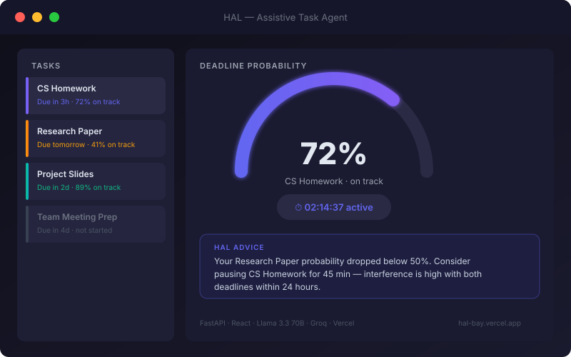
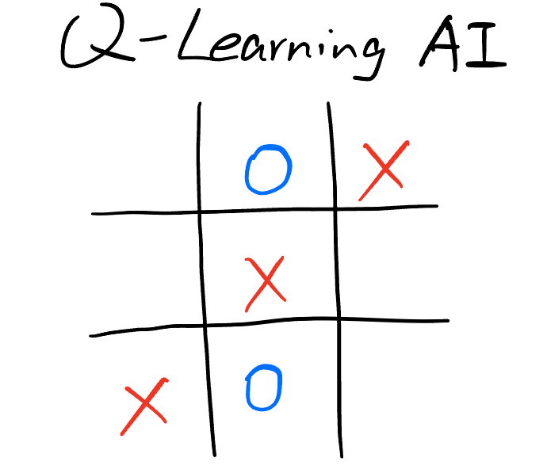
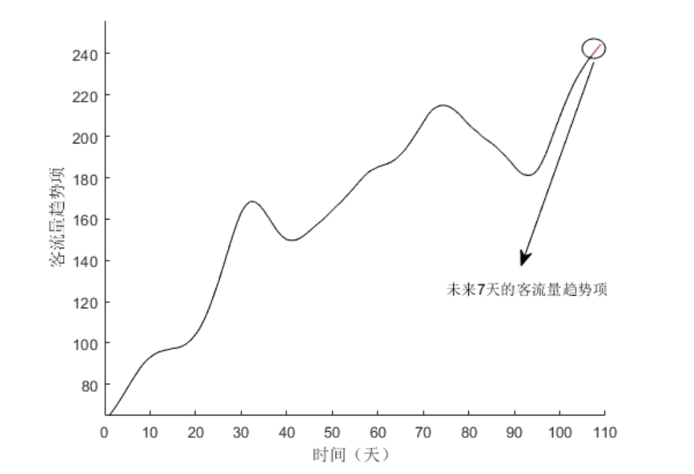

People Memory
A lasting memory of the people you know for your AI assistant: their needs, skills, and your past conversations.
Local MCP server · Evidence-backed recall · Relevant connection suggestions

A lasting memory of the people you know for your AI assistant: their needs, skills, and your past conversations.
Local MCP server · Evidence-backed recall · Relevant connection suggestions
An AI task assistant that turns natural-language goals into tasks and probability-aware planning advice.
Built independently · Three-stage LLM pipeline · Custom deadline-probability model

A self-play agent with separate Q-tables for X and O, playable against a human opponent.
Reinforcement learning · Tabular Q-learning · Self-play

Neural-network forecasting with genetic-algorithm optimization and contextual features such as weather and holidays.
MATLAB · SPSS · Time-series prediction
